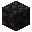
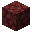

The Magma Cow is a Nether variant of the Cow added by Earthify.
Covered in volcanic rock and magma, Magma Cows thrive in the harsh conditions of the Nether and can even produce lava.
Spawning
Magma Cows naturally spawn in the following Nether biomes:
- Crimson Forest
- Warped Forest
- Basalt Deltas
They spawn on Basalt, Smooth Basalt, Blackstone and Magma Blocks.
Behavior
- Passive toward players.
- Attacks Magma Cubes.
- Can be bred using minecraft:magma_cream.
- Can be milked with a Bucket to obtain Lava.
- Consumes Magma Blocks to recover health.
Lava Production
Using a Bucket on an adult Magma Cow produces a Lava Bucket.
Unlike normal cows, Magma Cows provide lava instead of milk.
Weakening
Water weakens Magma Cows and causes them to emit smoke particles.
A weakened Magma Cow can recover by consuming a nearby Magma Block, restoring health and removing the weakened state.
Drops
|
 Blackstone |
1–3 |
|
 Netherrack |
1–2 |